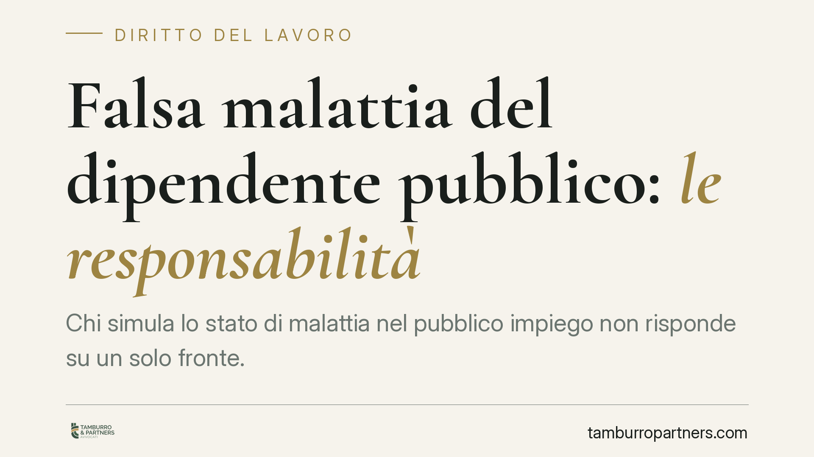

Falsa malattia del dipendente pubblico: le responsabilità
Chi simula lo stato di malattia nel pubblico impiego non risponde su un solo fronte. Alla sanzione disciplinare, fino al licenziamento, possono sommarsi l'obbligo di restituire quanto percepito e, in presenza di precisi presupposti, la responsabilità erariale davanti alla Corte dei Conti. Un quadro frammentato che conviene conoscere per distinguere i diversi piani di responsabilità e i rispettivi oneri di prova.

Il fatto e i piani di responsabilità
La simulazione della malattia da parte di un dipendente pubblico è una condotta che attiva, in astratto, più piani di responsabilità distinti e non alternativi: quello disciplinare, quello restitutorio e quello erariale. Tenerli separati è essenziale, perché ciascuno ha presupposti, procedure e organi di accertamento propri.
Sul piano pratico questo significa che l'eventuale assoluzione o archiviazione in uno dei procedimenti non travolge automaticamente gli altri. Un licenziamento, ad esempio, può reggere anche quando la responsabilità contabile non venga riconosciuta per difetto di prova su una singola voce di danno.
Inquadramento normativo
Occorre anzitutto chiarire un punto spesso confuso. L'art. 55-quater del D.lgs. 165/2001 sanziona, tra l'altro, la falsa attestazione della presenza in servizio, condotta che riguarda tipicamente la timbratura o l'uso indebito del badge (comma 1, lett. a, e commi 1-bis e seguenti). La simulazione dello stato di malattia è fattispecie distinta: non si inquadra nella timbratura falsa, ma nelle condotte fraudolente che integrano, a seconda dei casi, assenza ingiustificata o grave violazione dei doveri d'ufficio, con possibile rilievo penale (ad esempio per truffa o falso in certificato medico, ove ne ricorrano gli elementi).
La condotta può quindi condurre al licenziamento per giusta causa quando la gravità del comportamento recida in modo irreparabile il vincolo fiduciario. Si tratta però di una valutazione concreta, affidata al datore pubblico e sindacabile dal giudice, non di un automatismo.
Restituzione e danno erariale
Il primo effetto patrimoniale è la restituzione delle somme percepite durante l'assenza simulata: retribuzione non dovuta perché priva di causa. A questo si aggiunge il possibile danno erariale, azionabile dalla Procura contabile quando dalla condotta derivi un pregiudizio economico per l'amministrazione.
Un chiarimento necessario riguarda il cosiddetto danno all'immagine. L'art. 1, comma 1-sexies, della L. 20/1994 (introdotto dalla L. 190/2012) prevede una presunzione – relativa, quindi superabile da prova contraria – di danno all'immagine pari al doppio della somma indebitamente percepita. Questa presunzione non opera però in modo generalizzato: si applica ai casi di reati contro la Pubblica Amministrazione accertati con sentenza penale di condanna passata in giudicato. In assenza di tale presupposto, il danno all'immagine deve essere allegato e provato secondo le regole ordinarie, senza alcun raddoppio automatico.
Diverso ancora è il danno da disservizio, ossia il pregiudizio derivante dalla disorganizzazione del servizio causata dall'assenza. Anche questa voce non è presunta: richiede una prova concreta del maggior costo o del disservizio effettivamente subìto. La giurisprudenza contabile tende a escluderlo quando la Procura non dimostri, voce per voce, l'esistenza e l'entità del pregiudizio, evitando così quantificazioni meramente astratte.
Implicazioni pratiche
Per il dipendente, la lezione è chiara: una singola condotta può generare più procedimenti paralleli, con esiti anche differenti. La difesa non può essere unitaria, ma va calibrata sul singolo fronte.
Per l'amministrazione, l'onere probatorio è altrettanto rilevante: contestare la falsa malattia richiede elementi solidi (controlli medico-fiscali, accertamenti investigativi legittimi, documentazione), tanto sul piano disciplinare quanto su quello contabile. Le voci di danno diverse dalla pura restituzione vanno dimostrate, non presunte.
Cosa fare in concreto
- Distingui i procedimenti: tratta separatamente il fronte disciplinare, quello restitutorio e quello erariale, perché seguono regole e tempi diversi.
- Verifica i presupposti del danno all'immagine: contesta l'applicazione del raddoppio presuntivo in assenza di una condanna penale definitiva per reato contro la PA.
- Pretendi la prova delle singole voci: in sede contabile, sollecita la dimostrazione concreta del danno da disservizio e dell'entità del danno all'immagine.
- Conserva la documentazione sanitaria: certificati, referti e riscontri clinici sono decisivi per dimostrare la reale sussistenza della malattia.
- Rispetta termini e garanzie procedurali: presenta memorie e osservazioni nei termini previsti in ciascun procedimento.
Disclaimer
Contributo informativo a cura di Tamburro & Partners - Avv. Giuseppe Tamburro. Non costituisce parere legale.
Ogni storia di lavoro ha i suoi tempi.
Se gestisci HR e vuoi un confronto su contenzioso, ispezioni o licenziamenti, scrivi allo studio. Ti rispondiamo entro un giorno lavorativo.